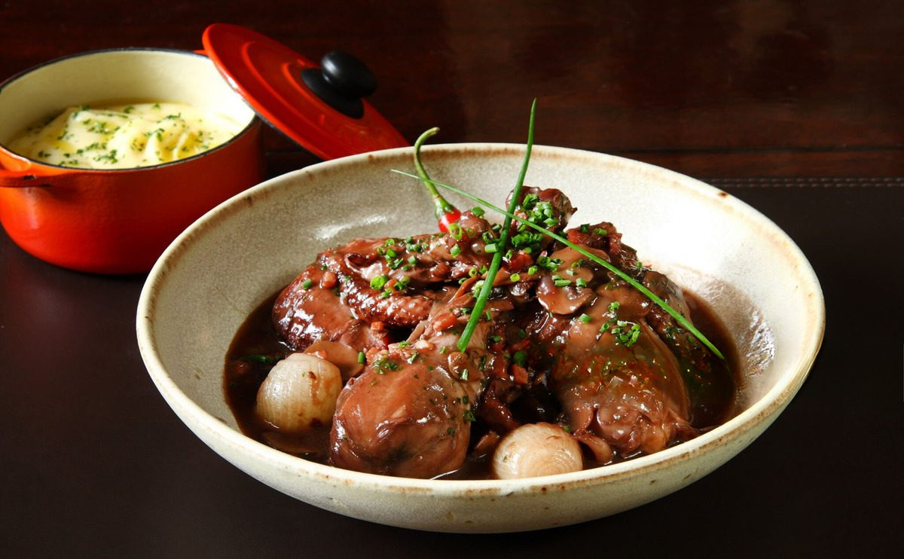

Bem-vindo à França!
Site criado para apresentar o trabalho dos alunos do 7º ano do Colégio Adélia, Unidade 1
Exposições
Gastronomia
A rica gastronomia francesa, reconhecida mundialmente, reflete a tradição, criatividade e sabor. Este verdadeiro patrimônio cultural é composto por uma variedade de pratos que vão desde o famoso Coq au Vin até a sofisticada Bouillabaisse. Cada receita é uma história que conecta a França à sua identidade, e as refeições são experiências sociais repletas de alegria.
Equipamentos Bélicos
A França possui uma longa e rica história militar, marcada pela evolução de seus armamentos ao longo dos séculos. Desde a Idade Média, com a utilização de espadas e lanças, até a Revolução Francesa, o país moldou suas táticas de guerra e o desenvolvimento de armamentos. As espadas, simbolizando poder e bravura, deram lugar a armas de fogo, como os mosquetes, refletindo a transformação das batalhas e estratégias militares. O resultado é uma das indústrias bélicas mais avançadas do mundo.
Esculturas
A escultura francesa é uma manifestação artística rica e diversificada, abrangendo desde as obras da Antiguidade até as modernas criações contemporâneas. Escultores renomados, como Rodin e Claudel, deixaram um legado que continua a inspirar artistas ao redor do mundo. Cada escultura conta uma história, refletindo a sociedade, os valores e as emoções do seu tempo.
Obras de Arte
A França é o berço de algumas das mais célebres obras de arte da história. Museus como o Louvre e o Musée d'Orsay abrigam peças icônicas que vão desde a pintura renascentista até o impressionismo e o modernismo. Cada obra é um testemunho do talento criativo e da evolução artística que caracterizou a nação ao longo dos séculos.